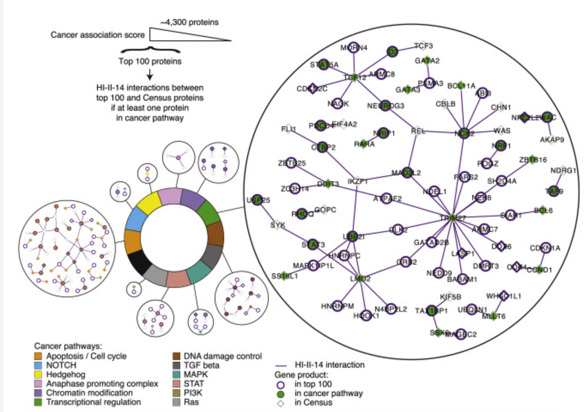
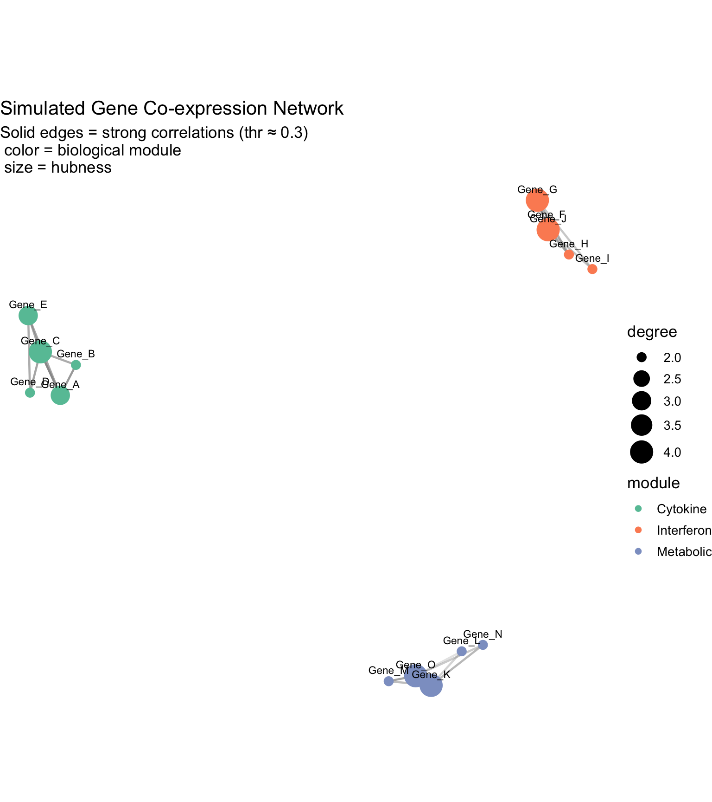
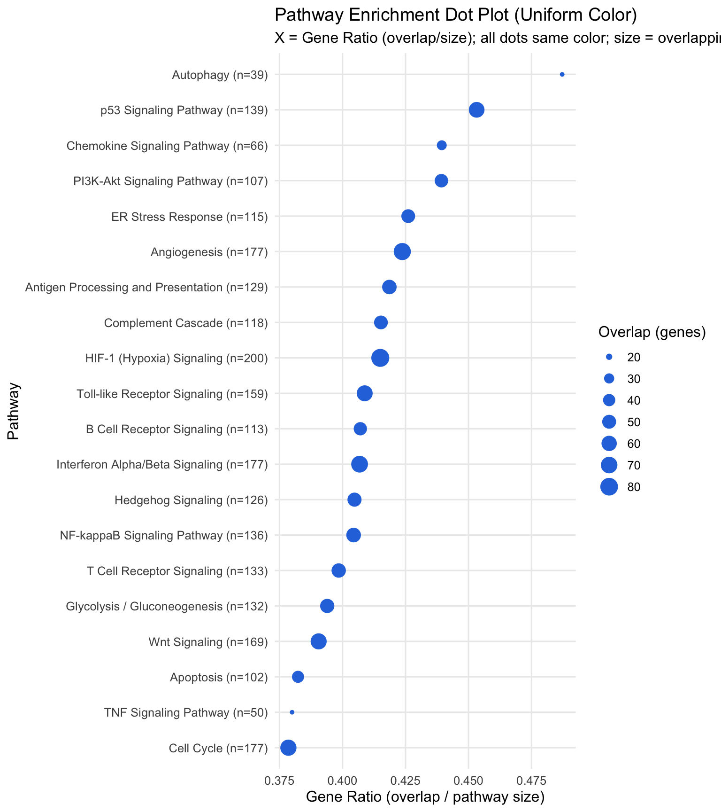
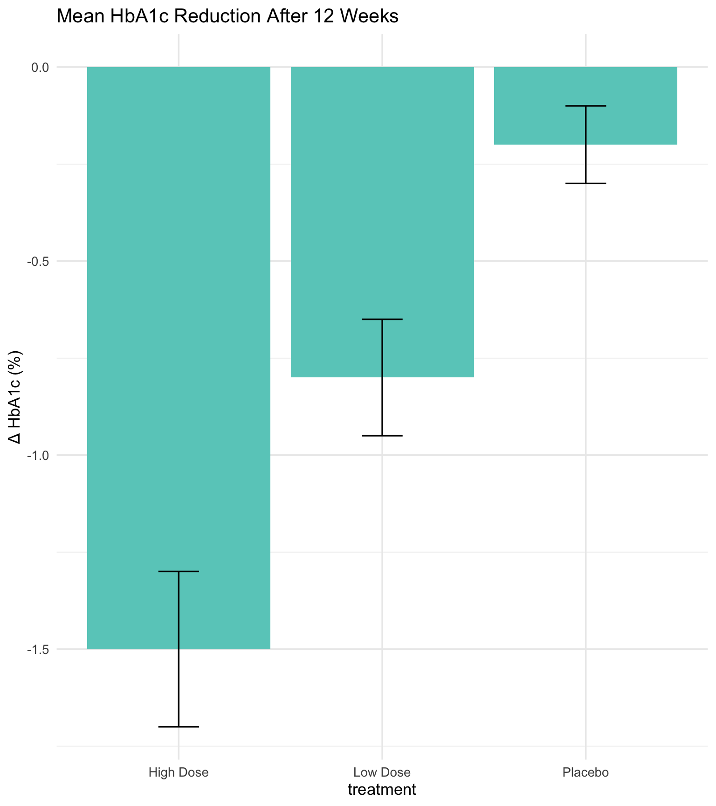

From Raw Data to Insight: Structuring Complexity
Lesley Chapman Hannah, Ph.D., M.S.
College of Graduate Studies
Northeast Ohio Medical University
Lecture Outline
Review: turn high dimensional data into insight
- Understand how complex, multi-variable analyses—such as gene expression, proteomic, or variant data—are distilled into interpretable biological patterns through plots
Mapping relationships and biological connectivity through biological networks
- Learn how network and pathway visualizations uncover the relational geometry of biological systems
Aggregating evidence from high-dimensional data into pathways
- Understand how pathway enrichment plots connect quantitative outcomes to biological mechanisms
Recap: High-dimensional [HD] Data Analysis
Sources of HD data:
Arises from modern -omics, imaging, EHR, and wearable streams
Millions of features per patient, making dimensionality reduction and organization essential for interpretation
Transforms data complexity into perceivable structure—turns thousands of features into a spatial or conceptual map of biological systems
HD Analysis Strategy
Dimensionality reduction reveals global structure—clusters, gradients, trajectories
Reveals where patterns live but does not explain biological mechanism
HD visualization reveals global structures:
HD data visualization reveals connectivity between biologically features forming meaningful connections rarely driven by single genes or measurements
Connectivity-based visuals that make these relationships visible: gene co-expression networks, functional modules, pathway cross-talk maps
Connecting Statistical Output to Biological Interpretation in High-Dimensional Data Analysis
High-dimensional data analysis can produce thousands of statistical results: differential expression tests, feature correlations, variant associations numbers to interpret directly
Visualization transforms this statistical matrix into visual reasoning using the following two approaches:
Networks \(\rightarrow\) How do features relate?
Pathways \(\rightarrow\) What biological programs explain this pattern?
Connecting Statistical Output to Biological Interpretation in High-Dimensional Data Analysis
High-dimensional data analysis can produce thousands of statistical results: differential expression tests, feature correlations, variant associations numbers to interpret directly
Visualization transforms this statistical matrix into visual reasoning using the following approaches:
Networks \(\rightarrow\) How do features relate?
In high-dimensional space, features (genes, proteins, variants) form co-expression or co-regulation modules
Network visualizations reduce dimensionality by mapping correlations into a perceivable structure — revealing functional neighborhoods within the data
Example: Thousands of genes/features \(\rightarrow\) network modules reduce complexity by grouping correlated features into “neighbourhoods”
Connecting Statistical Output to Biological Interpretation in High-Dimensional Data Analysis

Rolland, T. et al. Cell 159, 1212–1226 (2014)
Networks and Modules: Seeing Connectivity
In HD biology, relationships among features are often more important than the features themselves
Gene co-expression networks reveal groups of genes that rise/fall together—suggesting shared regulatory control
Protein–protein interaction (PPI) graphs identify modules that cooperate in signaling, metabolism, or immune activation
Pathway maps collapse thousands of interacting genes into interpretable sub-networks.
Visual encodings provide mechanistic meaning:
Color \(\rightarrow\) module identity
Edge transparency \(\rightarrow\) strength of correlation/interaction
Node size \(\rightarrow\) importance (centrality, hubness)
Data Visualization for Gene Co-expression Networks
Biological Question: How do genes within the same biological process—such as cytokine signaling, interferon response, or metabolic regulation—co-vary across samples, and which genes serve as key connectors within these processes?
Data [simulated]:
40 samples
15 genes
Chart type:
network graph represents relationships (edges) between entities (nodes)
Nodes \(\rightarrow\) genes
Edges \(\rightarrow\) strong pairwise correlations in gene expression
Goal(s):
Reveal clusters or modules of genes that function together
Highlight hub genes, which may regulate or integrate biological pathways
Data Visualization for Gene Co-expression Networks
Plot Interpretation:
Each point (node) represents a gene
- Point positions are derived from pairwise gene–gene correlations, so genes that behave similarly across patients or conditions appear closer together
Solid grey edges link genes whose expression patterns are strongly correlated (|r| > threshold)
- These edges show co-expression relationships, mapping the local structure of molecular coordination
Color encodes biological modules: Cytokine, Interferon, and Metabolic — allowing us to see whether genes cluster by known functional groupings
Node size represents hubness (degree)
- Larger nodes are genes that co-vary with many others and may act as key regulators or integrators of biological signals
Data Visualization for Gene Co-expression Networks
Plot Interpretation:
- Green cluster - cytokine cluster:
Genes likely to coordinate inflammatory communication between cells
- Orange cluster - interferon cluster:
Genes co-activated as part of the antiviral defense response, typically regulated by interferon pathways
- Blue cluster - metabolic cluster:
Genes whose expression reflects shared metabolic or energy-regulation processes, providing the cellular resources needed to sustain immune activity

Connecting Statistical Output to Biological Interpretation in High-Dimensional Data Analysis
High-dimensional data analysis can produce thousands of statistical results: differential expression tests, feature correlations, variant associations numbers to interpret directly
Visualization transforms this statistical matrix into visual reasoning using the following approaches:
Pathways \(\rightarrow\) What biological programs explain this pattern?
Once subsections of data are visible, mapping them to pathways or ontologies connects the statistical pattern to biological mechanism — turning feature clusters into interpretable processes
Example: module corresponds to a T-cell activation pathway / metabolic shift
Pathway Level Analysis: Organizing Thousands of Tests
Organize results into interpretable biological systems
Data visualization strategies to transform tabular data containing significant genes into visual structures
Visual aggregation = clarity: grouping results by pathways (GO, KEGG, Reactome)
Pathway Level Analysis: Organizing Thousands of Tests
After running biomedical analysis - differential expression, epigenetic analysis, proteomics - obtain thousands of significant hits
Raw tables of p-values offer no biological clarity—HD data must be grouped into interpretable themes
Pathway level analysis moves from individual gene results (micro-level) to systems-level meaning (macro-level)
Pathway Level Analysis: Organizing Thousands of Tests
Visual aggregation reveals biological programs, not individual genes
HD pathway level visualization types:
Dot plots \(\rightarrow\) summarize enrichment significance and effect size across pathways
Enrichment maps \(\rightarrow\) network-style visuals linking related functions (e.g., immune signaling \(\leftrightarrow\) cytokine response)
Network graphs \(\rightarrow\) reveal cross-talk between processes, bridging molecular and clinical insight
Pathway Level Analysis: Organizing Thousands of Tests
Research Question: Which biological pathways exhibit coordinated shifts in gene expressio, and how does the gene ratio (overlap / pathway size) highlight the relative strength of each pathway’s activation?
Data [simulated]:
3,000 genes with expression changes [log-fold changes] and p-values
Biological processes drawn from KEGG/Reactome/GO
Pathway Level Analysis: Organizing Thousands of Tests
Plot:
Pathway enrichment dot plot
Plot summarizes thousands of statistical tests into a small number of interpretable biological themes
Plot Interpretation
Row \(\rightarrow\) pathway
Dot \(\rightarrow\) level of pathway enrichment in the data

Pathway Level Analysis: Organizing Thousands of Tests
Plot Interpretation
X-axis [Gene Ratio]: fraction of significant genes in that pathway
Dot size: number of overlapping genes (pathway “weight”)
Pathway label (n=…): total number of genes in the pathway database
Pathways such as PI3K-Akt signaling, ER stress response, interferon signaling, and apoptosis show high gene ratios
Trends suggest possible changes in immune activation, cell survival signaling, or stress adaptation on a cellular level

Summary
network graphs reduce complexity by mapping correlations between genes into clusters
visuals expose how genes cooperate within broader cellular systems like cytokine, interferon, or metabolic networks
data can be encoded as:
Nodes (i.e.: genes)
Edges (i.e.: correlations)
Color (i.e.: biological module)
Size (i.e.: degree of biological impact)